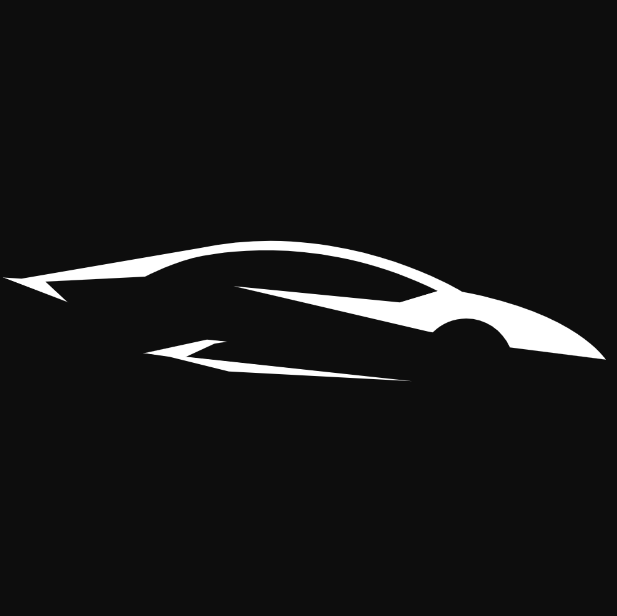

Hot Hatch
The Pininfarina Battista is an all-electric hypercar produced by Automobili Pininfarina,
an Italian luxury electric vehicle manufacturer. The car is named after Battista "Pinin" Farina,
the founder of the Pininfarina design house.
The Battista is known for its impressive performance capabilities. It boasts a power output of around 1,900 horsepower and 1,696 lb-ft of torque, making it one of the most powerful road-legal cars
The hypercar can accelerate from 0 to 60 mph in under 2 seconds, making it one of the quickest production cars in terms of acceleration.
The Rimac Nevera is an all-electric hypercar produced by Rimac Automobili,
a Croatian company specializing in electric vehicle technology.
The Nevera was unveiled in 2021 and is the production version of the Rimac C_Two concept
The Rimac Nevera is renowned for its exceptional performance. It boasts a power output of 1,914 horsepower (1,408 kW) and 1,741 lb-ft (2,360 Nm) of torque, making it one of the most powerful electric cars in the world. The Nevera can accelerate from 0 to 60 mph in just 1.85 seconds, making it one of the quickest production cars in terms of acceleration.
The SSC Tuatara is a hypercar manufactured by SSC North America, an American automobile manufacturer.
It was first introduced in 2011 as a successor to the SSC Ultimate Aero.
The Tuatara is known for its outstanding performance capabilities. It is powered by a twin-turbocharged 5.9-liter V8 engine developed by Nelson Racing Engines, which produces an incredible 1,750 horsepower when using E85 fuel. On standard gasoline, it produces 1,350 horsepower. The car also boasts 1,280 lb-ft of torque.